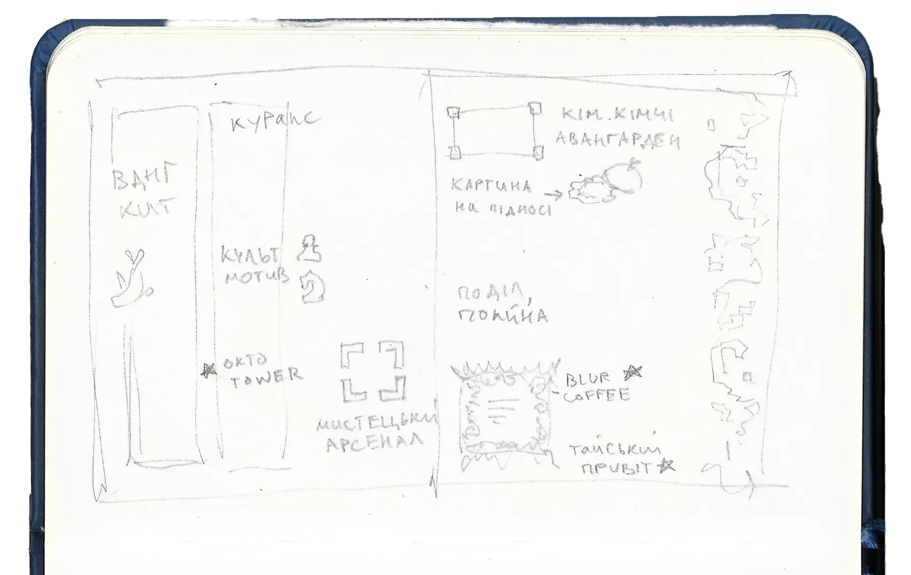
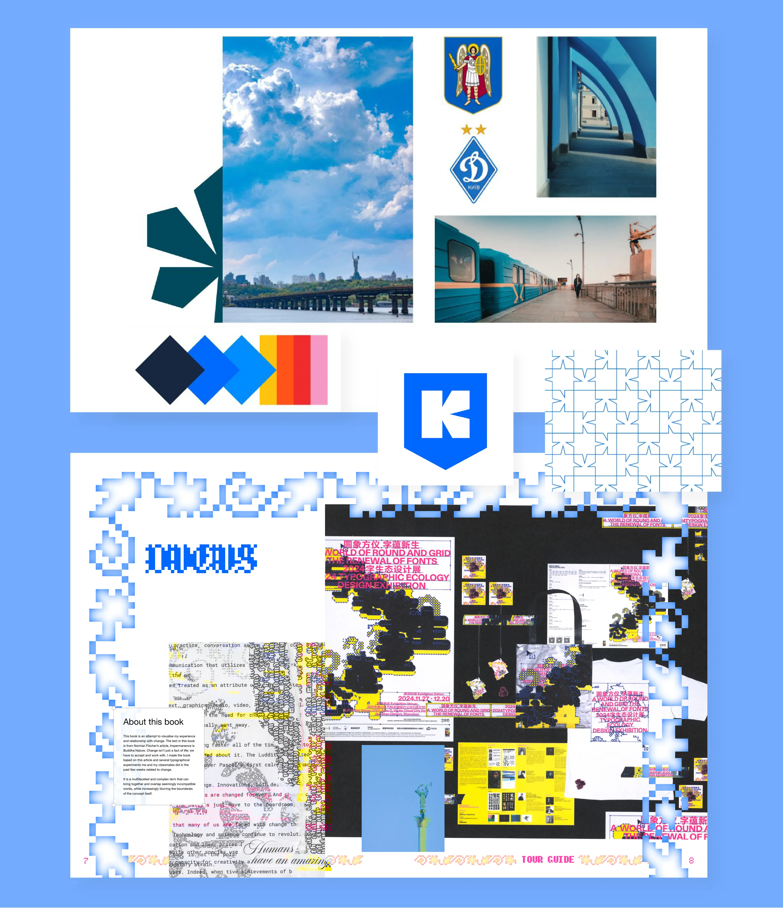

Kyiv Tour Guide
Layout Design, Publication
Baltimore MD, 2026
SPD-U 2026 Student Competition
About
This guide shows a bold and youthful spirit of Kyiv, Ukraine's capital. As part of a younger generation, I invite you to experience the city through my eyes and discover the places I cherish the most.


The task
This layout design was created as an entry for SPD-U 2026 Student Competition. The task was to design a two-spread “(NAME OF THE CITY) RULES” magazine showcasing a hip and interesting destination. The publication is targeted for the young independent traveler, covers culture, nightlife, and where to stay.
Initial sketches and moodboard


The challenge
Looking at previous years’ winners, it’s noticeable that The Society of Publication Designers tends to favor more timeless designs, perhaps with a trendy twist. Therefore, I made it my goal to base my design as much as possible on the traditional principles of hierarchy, grid systems, and composition. I brought in modern elements by using pixelated graphics, blur effects, and faux bounding boxes.
Color palette and graphic system

Design iterations
The city symbol of Kyiv is a chestnut tree leaf, so in my explorations I built the composition around it. I’m weaving the past into present-day graphic design by digitalizing authentic 18th-century Ukrainian embroidery. The title is rendered as a custom Ancient Slavic typeface.

Final result
Keeping the simple, easy-on-the-eye grid, I spiced up the design with small intricate details, the use of negative space and color accents.